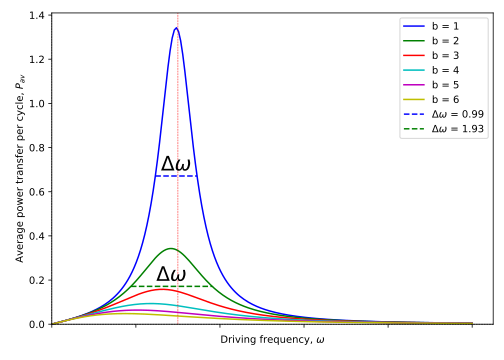
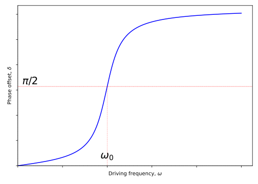
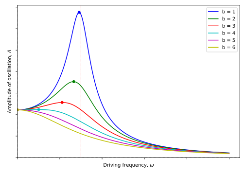
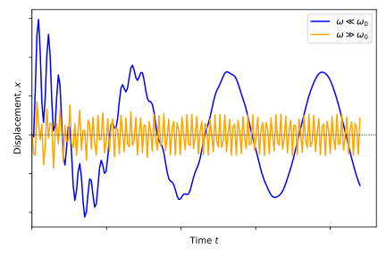
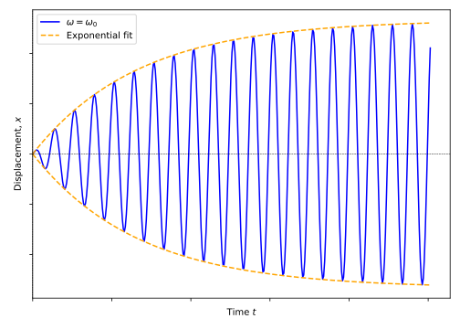

3 Forced oscillations
Textbook link: Tipler and Mosca 14.5
In Chapter 2) we explored the effect of damping on a system and we said that every system in the real world is, to a greater or lesser extent, a damped system in which energy is lost (dissipated) to the surroundings. In order to maintain the amplitude of any oscillation we must supply energy to the system at the same rate as it is lost to the surroundings; for example, pushing a child on a swing.
The equation for forced SHM is given in Equation 3.1:
\[ m \frac{\mathrm{d}^2 x}{\mathrm{d}t^2} + b \frac{\mathrm{d}x}{\mathrm{d}t}+ kx = F_0 \mathrm{e}^{\mathrm{i}\omega t} \tag{3.1}\]
Compare this to Equation 2.3 for damped SHM; we have now applied an oscillating force represented as \(F_0 \mathrm{e}^{\mathrm{i}\omega t}\), with an amplitude of \(F_0\) and frequency \(\omega\). Note that this driving frequency \(\omega\) is different to the natural undamped frequency of the oscillator, \(\omega_0 = \sqrt{\frac{k}{m}}\) and different again to the frequency of the damped unforced oscillator, \(\omega^\prime = \sqrt{\omega_0^2 - \frac{b^2}{4m^2}}\).
Any forced oscillation consists of two distinct regimes:
- An initial transient period during which the oscillations are established, and
- A steady state period during which the oscillations have constant amplitude and a frequency equal to the driving frequency, \(\omega\).
The general solution of the equation for forced SHM shown in Equation 3.1 is a combination of these two regimes.
3.1 The Transient Solution
The solution to the transient component of the forced oscillator is identical to the solution of damped SHM (i.e. Equation 3.1 with the right-hand side set to zero; identical to Equation 2.3). Its solution is shown in Equation 3.2:
\[ \begin{array}{lrcl} & x &=& A_0 \mathrm{e}^{- \left(\frac{b}{2m}\right)t} \mathrm{e}^{\mathrm{i} \left( \omega^\prime t + \delta^\prime \right)} \\ \textsf{or:} & x &=& A_0 \mathrm{e}^{- \left(\frac{b}{2m}\right)t} \cos \left( \omega^\prime t + \delta^\prime \right) \\ \end{array} \tag{3.2}\]
This contribution to motion establishes the oscillation, but rapidly decays with time constant \(\tau = \frac{m}{b}\). The term \(\delta^\prime\) is simply the phase constant for this transient oscillation.
3.2 The Steady State solution
Once in the steady state, the energy which is put into the system during each cycle is equal to the energy dissipated per cycle due to the damping in the system. If there is no damping of the system, energy keeps being added to the system and the amplitude will increase indefinitely. This is not a steady state, and is an unphysical result. The frequency then of this ‘driven’ oscillator in the steady state is equal to the driving frequency.
The amplitude (and hence the energy) of the system in the steady state depends on both the amplitude and the frequency of the driving force. For a steady state, the solution to Equation 3.1 is in the form shown in Equation 3.3:
\[ x = A \mathrm{e}^{\mathrm{i}\left(\omega t - \delta \right)} \tag{3.3}\]
The terms \(A\) and \(\delta\) are defined in Equation 3.4 and Equation 3.5 below:
\[ A = \frac{F_0}{\sqrt{m^2 \left(\omega_0^2 - \omega^2 \right)^2 + b^2 \omega^2}} \tag{3.4}\]
\[ \delta = \arctan \left( \frac{b\omega}{m \left( \omega_0^2 - \omega^2 \right)} \right) \tag{3.5}\]
3.3 Steady state behaviour - Resonance
When we vary the frequency of the driving frequency we find that the response of the driven system varies. If we examine the power transferred to the system as we vary the driving frequency, we see that there is a peak around the natural frequency, \(\omega_0\), of the driven system (Figure 3.1). This is a phenomenon known as resonance.
If this system is damped, we also see a change in the “full-width at half-maximum” value.1 This FWHM is designated by \(\Delta \omega\) in Figure 3.1 and is related to the \(Q\)-factor of the system via Equation 3.6:
\[ \frac{\Delta \omega}{\omega_0} = \frac{1}{Q} \tag{3.6}\]
This allows us to determine the \(Q\)-factor of a system through measurement of resonance of the system, as a lightly-damped system (high \(Q\)) will give a sharp resonance with low \(\Delta \omega\), while a more heavily damped system will lead to a more broad resonance profile.
This use of the \(Q\)-factor is important as it give us a measure of the ‘sharpness’ (or quality) of the resonance. It may be applied to many systems including electronic circuits.
We can also examine the phase of the oscillator’s displacement \(x\) relative to that of the driving force, \(\delta\), shown in Figure 3.2.

We can see that at low driving frequencies, there is very little phase shift between the two (the force is at a minimum when the displacement is at a minimum and is in the same direction), while at very high driving frequencies we approach a maximum phase shift of \(\pi\) between the two (force still at a minimum at minimum displacement, but now the force is directed in the opposite direction to the displacement; akin to SHM). The phase change is at its most rapid when the frequency of the driving force \(\omega\) is similar to the natural frequency of the oscillator (\(\omega_0\)). At this point, the driving force are “in quadrature” (90\(^\circ\) out of phase), with the force at a maximum when \(x\) is changing most rapidly.
3.4 Full solution of the forced oscillator
As with the damped oscillator explored in Chapter 2, the full solution of the forced oscillator is found through the combination of the “transient state” (a free, damped system) and the “steady state” (fully forced oscillations). This is illustrated in Equation 3.7:
\[ \begin{array}{lrcccc} & x &=& \textsf{transient} &+&\textsf{steady state} \\ \textit{i.e.} & x&=& A_0 \mathrm{e}^{- \left(\frac{b}{2m}\right)t} \mathrm{e}^{\mathrm{i} \left( \omega^\prime t + \delta^\prime \right)} &+& A \mathrm{e}^{\mathrm{i}\left(\omega t - \delta \right)} \\ \end{array} \tag{3.7}\]
The terms in Equation 3.7 are as follows:
- \(\delta\) is given by Equation 3.5;
- \(A\) given by Equation 3.4;
- \(A_0\) and \(\delta^\prime\) depend on the initial conditions;
- \(\omega\) is the driving frequency;
- \(\omega^\prime\) is the frequency of the damped (transient) oscillations.
We can simplify our view of Equation 3.7 by applying initial conditions whereby the displacement \(x = 0\) at time \(t = 0\). Therefore:
\[ 0 = A_0 \mathrm{e}^{\mathrm{i} \left( \delta^\prime \right)} + A \mathrm{e}^{-\mathrm{i}\delta} \]
…or, to rearrange, we obtain the form shown in Equation 3.8:
\[ A_0 = -A \mathrm{e}^{-\mathrm{i}\left( \delta + \delta^\prime \right)} \tag{3.8}\]
As with any complex representation, we now compare the real and imaginary parts of the solution. Remember that Equation 3.8 expands via De Moivre’s theorem to:
\[ A_0 = -A \left( \cos \left( \delta + \delta^\prime \right) + \mathrm{i} \sin \left( \delta + \delta^\prime \right) \right) \tag{3.9}\]
The imaginary component of Equation 3.9 reduces to zero (the solution, \(A_0\) is fully real):
\[ 0 = -A \sin \left( \delta + \delta^\prime \right) \]
We can therefore relate \(\delta\) and \(\delta^\prime\) as follows:
\[ \begin{array}{rcl} \delta + \delta^\prime = \pi & \textit{i.e.} & \delta^\prime = \pi - \delta \end{array} \tag{3.10}\]
We now examine the ‘real’ component of Equation 3.9, equal to \(A_0\):
\[ A_0 = - A \cos \left( \delta + \delta^\prime \right) \]
…and doing the same analysis, now that we know that, under our initial conditions, \(\delta + \delta^\prime = \pi\):
\[ \begin{array}{rcl} A_0 = -A \cos \pi & \textit{i.e.} & A_0 = A \end{array} \tag{3.11}\]
We can now revisit Equation 3.7, now that we have values for \(\delta\), \(\delta^\prime\) and \(A_0\) under our starting conditions ( \(x = 0\) when \(t = 0\)):
\[ \begin{array}{rcl} x &= & A \left[ \mathrm{e}^{\mathrm{i}\left(\omega t - \delta \right)} + \mathrm{e}^{- \left(\frac{b}{2m}\right)t} \mathrm{e}^{\mathrm{i} \left( \omega^\prime t + \delta^\prime \right)} \right]\\ &= & A \left[ \mathrm{e}^{\mathrm{i}\left(\omega t - \delta \right)} + \mathrm{e}^{- \left(\frac{b}{2m}\right)t} \mathrm{e}^{\mathrm{i} \left( \omega^\prime t + \pi - \delta \right)} \right]\\ &= & A \left[ \mathrm{e}^{\mathrm{i}\left(\omega t - \delta \right)} + \mathrm{e}^{- \left(\frac{b}{2m}\right)t} \mathrm{e}^{\mathrm{i} \left( \omega^\prime t - \delta \right)} \mathrm{e}^{\mathrm{i} \pi} \right]\\ &= & A \left[ \mathrm{e}^{\mathrm{i}\left(\omega t - \delta \right)} - \mathrm{e}^{- \left(\frac{b}{2m}\right)t} \mathrm{e}^{\mathrm{i} \left( \omega^\prime t - \delta \right)} \right]\\ \end{array} \tag{3.12}\]
Finally, we can find the actual displacement of the oscillator by examining the real component of Equation 3.12, summarised in Equation 3.13):
\[ \mathrm{Re}(x) = A \left[ \cos (\omega t - \delta) - \mathrm{e}^{- \left(\frac{b}{2m}\right)t} \cos (\omega^\prime t - \delta) \right] \tag{3.13}\]
We can visualise the amplitude of a forced oscillator, as shown in Figure 3.3. At very low frequencies, the oscillation has the same amplitude as the driving oscillation. This rapidly increases under resonance to a peak, but then drops rapidly to a value towards zero.

Note that the position of the resonant peak amplitude also varies with the damping coefficient \(b\).
3.4.1 Special cases of forced oscillations
There are three special cases of forced oscillations to consider:
- \(\omega \ll \omega_0\)
- \(\omega \gg \omega_0\)
- \(\omega = \omega_0\)

In the special case when \(\omega = \omega_0\) and the damping coefficient \(b\) is small (allowing the damped frequency \(\omega^\prime\) to be approximately equal to the driving frequency \(\omega\)), we can rewrite the expression of the displacement (Equation 3.13) as shown in Equation 3.14:
\[ \mathrm{Re}(x) = A \cos (\omega_0 t - \delta) \left[ 1 - \mathrm{e}^{- \left(\frac{b}{2m}\right)t} \right] \tag{3.14}\]
We can see that the oscillation will converge to a maximum value, at which point the energy put into the system becomes equal to the energy dissipated by the system through damping, as shown in Figure 3.5:

3.5 Energy in driven oscillators
In a driven oscillator, energy is continually added to the system. When it reaches its steady state, the rate of loss of energy in each cycle due to damping of the system is equal to the work done by the driving force.
We can demonstrate this through integration; remember that (simplistically!) work done is “force \(\times\) distance”, so under varying force (as we have here), we can integrate the force with respect to displacement \(x\) to find an expression for the work done.
For the sake of convenience, we will consider the “real” component of the equation for forced SHM shown in Equation 3.1 (the left-hand-side is entirely “real”, so the “imaginary” component reduces to zero anyway):
\[ m \frac{\mathrm{d}^2 x}{\mathrm{d}t^2} + b \frac{\mathrm{d}x}{\mathrm{d}t}+ kx = F_0 \cos \omega t \tag{3.15}\]
We also know that the steady state solution for the displacement \(x\) in SHM is as given in Equation 1.5. We can then find an expression for the velocity \(v\) by finding the first derivative of this expression (Equation 3.16):
\[ \begin{array}{rcl} x& =& A \cos (\omega t - \delta)\\ v = \dfrac{\mathrm{d}x}{\mathrm{d}t} &=& -\omega A \sin (\omega t - \delta) \end{array} \tag{3.16}\]
3.5.1 Energy input for driven oscillators
To find the energy which is put into the system over one cycle, we therefore need to find the integral of the force acting over one cycle of the oscillation, from \(t = 0\) to \(t = T\) (remember that \(T\) is the period of the oscillation). We do this integration by substituting our variable \(\mathrm{d}x\) for \(v\mathrm{d}t\) (as defined in Equation 3.16):
\[ \begin{array}{rcl} E_\mathrm{in} = \displaystyle{\int_0^T} F \cdot \mathrm{d}x &\equiv& \displaystyle{\int_0^T} F \cdot v \mathrm{d}t \\ &=& \displaystyle{\int_0^T} F_0 \cos \omega t \cdot \left[ -\omega A \sin (\omega t + \delta)\right] \mathrm{d}t \\ &=& -\omega A F_0 \displaystyle{\int_0^T} \cos \omega t \cdot \sin (\omega t + \delta) \\ &=& -\omega A F_0 \displaystyle{\int_0^T} \cos \omega t \cdot \left[ \sin \omega t \cos \delta + \cos \omega t \sin \delta \right] \\ &=& -\omega A F_0 \displaystyle{\int_0^T} \left[ \cos \omega t \sin \omega t \cos \delta + \cos \omega t \cos \omega t \sin \delta \right] \\ &=& -\omega A F_0 \displaystyle{\int_0^T} \left[ \tfrac{1}{2} \sin 2\omega t \cos \delta + \left( \tfrac{1}{2}\cos 2\omega t + \tfrac{1}{2} \right) \sin \delta \right] \\ &=& -\omega A F_0 \left[ -\tfrac{1}{4\omega} \cos 2\omega t \cos \delta + \left( \tfrac{1}{4\omega}\sin 2\omega t + \tfrac{t}{2} \right)\sin \delta \right]_0^T\\ &=& -\omega A F_0 \left( \left[ -\tfrac{1}{4\omega} \cos 2\omega T \cos \delta + \left( \tfrac{1}{4\omega}\sin 2\omega T + \tfrac{T}{2} \right)\sin \delta \right] - \left[ -\tfrac{1}{4\omega} \cos 0 \cos \delta + \left( \tfrac{1}{4\omega}\sin 0 + \tfrac{0}{2} \right)\sin \delta \right] \right) \\ \end{array} \]
Evaluation of this integral gives us the end result shown in Equation 3.17:
\[ E_{\mathrm{in}} = \frac{1}{2}\omega A F_0 T \sin \delta \tag{3.17}\]
If we recall that \(\delta = \frac{\pi}{2}\) at resonance, substitution of this value into Equation 3.17 tells us that the maximum energy is transferred to the oscillator when driven at a resonant frequency - in line with our expectations.
If we now use the definition of \(\delta\) in Equation 3.5, we can use trigonometry and the expression for \(A\) in Equation 3.4 to give the expression \(\sin \delta = \frac{Ab\omega}{F_0}\); we can also use the fact that the period of oscillation \(T\) and the angular frequency \(\omega\) are related by Equation 1.12 (\(T = \frac{2\pi}{\omega}\)), and simplify the expression for the energy input for the forced oscillator as shown in Equation 3.18:
\[ E_{\mathrm{in}} = \pi b \omega A^2 \tag{3.18}\]
3.5.2 Energy lost in driving oscillators
To now determine the amount of energy, we follow a similar process as followed in Section 3.5.1. This time however we need to determine the work done by the oscillator on the damping force during one cycle. This integral is set up as follows:
\[ E_{\mathrm{lost}} = \int_0^T F v \mathrm{d}t \]
…but this time the force is the damping force, \(F_{\mathrm{damp}} = bv\).
\[ E_{\mathrm{lost}} = \int_0^T b v^2 \mathrm{d}t \]
As before, we have the result that \(v = -\omega A \sin(\omega t - \delta)\) (Equation 3.16), and following through the integration in a similar manner as in the previous section we are led to the result in Equation 3.19 for a driven damped oscillator at steady state.
\[ E_{\mathrm{lost}} = \pi b \omega A^2= E_{\mathrm{in}} \tag{3.19}\]
This result should not be a surprise; at a steady state, we expect the energy lost to be equivalent to the energy put into the system, however it is nice that this is vindicated through the mathematics!
A similar result may be obtained for electrical systems in resonance.
Note: When \(b = 0\) the above result appears to fail (no energy is lost, but none is put in??); in fact, in an undamped system there can be no steady state (as no energy is lost!), so the amplitude of vibration \(A \rightarrow \infty\), so this result does not apply.
3.6 Impedance
As you learn about fields, you will examine electrical circuits and see that circuits containing capacitors and inductors are analogous to mechanical oscillators, with the electrical charge oscillating within the circuit. These properties of circuits have many important applications and you will find that much of the analysis we have done here can be applied to those electrical systems.
In the context of an electrical circuit it is useful to define the term impedance a measure of the opposition to the flow of current, and is defined as the ratio of the voltage to current (\(\frac{V}{I}\)) for a particular circuit component. For a resistor this is simply the resistance, however capacitors and inductors also possess impedance.
It turns out to be helpful to write this impedance as a complex number with components in both the real and imaginary plane. This works well with the complex representation of oscillations and naturally takes care of any differences in phase of the current and voltage in different components.
Bringing the analogy back to mechanical oscillations, a mechanical system can also be considered to have an impedance. We define the mechanical impedance as the force required to produce unit velocity, i.e. \(Z_m = \frac{F}{v}\), or \(F = vZ_m\). This is the mechanical equivalent of Ohm’s law; force corresponding to the voltage, and velocity corresponding to current.
This idea of mechanical impedance will be useful in discussion of wave propagation.
The “full-width at half maximum” (FWHM) is a term widely used in signals processing to describe the “spread” of a signal. A large FWHM indicates a broad signal over a range of frequencies, while a small FWHM indicates a sharp signal over a narrow band of frequencies.↩︎